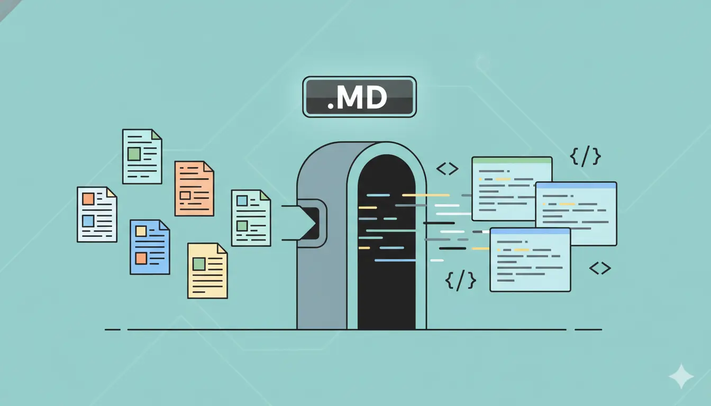

越来越多的语雀用户想要将自己的文档迁移到其他平台——博客框架（Hexo、Hugo）、本地知识管理（Obsidian、Logseq）或者团队协作工具（Notion）。而Markdown作为这些平台的通用格式，成为迁移的桥梁。
- Markdown 是从语雀迁移到 Hexo/Hugo/Obsidian/Notion 的通用桥梁格式
- 语雀图片防盗链是转换最大障碍，必须开启图片本地化
- Obsidian 可直接将导出文件夹作为 Vault 打开，无需额外处理
但语雀到 Markdown 的转换并没有看起来那么简单。如果你对语雀导出的各种限制还不了解，建议先阅读语雀用户最头疼的7个问题。本文将详解整个迁移工作流，帮你顺利完成从语雀到目标平台的全流程。
为什么要转 Markdown？
Markdown 是当前技术社区最流行的文档格式，它的优势在于：
- 通用性：几乎所有技术平台、博客框架、知识管理工具都支持
- 可读性：纯文本格式，即使没有渲染器也能阅读
- 版本控制友好：可以用 Git 追踪每一次修改
- 便携性：不依赖任何特定平台或工具
- 永久保存：纯文本文件几十年后仍然可以打开
将语雀文档转为 Markdown 后，你的知识真正属于你自己——不再被任何平台绑定。
语雀转 Markdown 有哪些难点？
语雀转 Markdown 主要面临三大难点：图片防盗链导致外部无法加载、大量文档无法逐篇手动处理、以及语雀特有格式（画板、思维导图等）与标准 Markdown 存在差异。
难点一：图片防盗链
语雀的图片存储在 cdn.nlark.com，设有严格的 Referer 防盗链。直接导出的 Markdown 中的图片链接在其他平台无法正常加载。必须将图片下载到本地，并替换为相对路径或重新上传到图床。
难点二：批量处理
手动逐篇导出再逐篇处理图片，对于有上百篇文档的知识库来说工作量巨大。需要一个能自动化批量处理的工具。具体的批量操作方法可参考语雀知识库批量导出完整教程。
难点三：格式差异
语雀的富文本编辑器支持一些 Markdown 不直接支持的元素（如画板、思维导图、嵌入卡片等），这些内容在转换时需要特殊处理或降级。
语雀迁移到其他平台的完整流程是什么？
完整的迁移流程分为4个阶段：使用 YuqueOut 批量导出、内容清洗（可选）、导入目标平台、验证与调整。整个过程最快 5 分钟即可完成。
阶段一：使用 YuqueOut 批量导出
- 安装 YuqueOut Chrome 扩展
- 打开语雀并登录，点击 YuqueOut 图标
- 选择要迁移的知识库，选择 Markdown 格式
- 开启图片本地化选项
- 点击导出，等待完成
导出完成后，你会得到一个保留了原始目录结构的文件夹，其中：
- 每篇文档对应一个
.md文件 - 图片保存在对应的
assets或images文件夹中 - Markdown 中的图片链接已替换为本地相对路径
阶段二：内容清洗（可选）
根据目标平台的要求，你可能需要对 Markdown 文件做一些调整：
- 添加 Front Matter：Hexo、Hugo 等博客框架需要在文件开头添加 YAML 格式的元数据（标题、日期、标签等）
- 调整图片路径：不同平台对图片引用路径的约定可能不同
- 处理特殊语法：如语雀特有的提示块、折叠块等
阶段三：导入目标平台
将处理好的 Markdown 文件导入或复制到目标平台的对应目录中。
阶段四：验证与调整
在目标平台上浏览导入的内容，检查格式是否正确，图片是否正常显示。
| 目标平台 | 导入格式 | 图片处理 | 迁移难度 | 额外步骤 |
|---|---|---|---|---|
| Obsidian | Markdown | 本地路径直接可用 | 极低 | 拖入 Vault 即可 |
| Hexo / Hugo | Markdown + Front Matter | 需移到 static 目录 | 中等 | 添加 Front Matter、调整图片路径 |
| Notion | Markdown | 需上传图床或云存储 | 中等 | 图片需替换为在线 URL |
| 飞书文档 | Markdown / Word | 导入时自动上传 | 低 | 飞书批量导入即可 |
| VitePress | Markdown | 本地相对路径可用 | 中等 | 配置 sidebar、调整目录结构 |
怎么把语雀文档迁移到 Hexo 或 Hugo？
用 YuqueOut 导出为 Markdown 后，为每篇文章添加 Front Matter（标题、日期、标签），然后将文件复制到 Hexo 的 source/_posts/ 或 Hugo 的 content/posts/ 目录即可。Hexo 和 Hugo 是最流行的静态博客框架，原生使用 Markdown 文件作为内容源。
迁移步骤
- 使用 YuqueOut 导出知识库为 Markdown（开启图片本地化）
- 为每个 Markdown 文件添加 Front Matter：
- Hexo 格式：
title、date、tags、categories - Hugo 格式：类似，但
date格式为 ISO 8601
- Hexo 格式：
- 将 Markdown 文件复制到
source/_posts/（Hexo）或content/posts/（Hugo） - 将图片文件复制到对应的静态资源目录
- 运行
hexo generate或hugo build验证
可以编写一个简单的脚本来批量添加 Front Matter。例如根据文件名生成 title，根据文件修改时间生成 date。
---
title: 你的文档标题
date: 2025-05-16
tags:
- 语雀
- 知识管理
categories:
- 技术笔记
---
正文内容从这里开始...提示：可以写脚本批量为导出的 Markdown 文件添加 Front Matter，根据文件名生成 title，根据修改时间生成 date。
语雀文档怎么导入 Obsidian？
将 YuqueOut 导出的 Markdown 文件夹直接作为 Obsidian Vault 打开即可，基本开箱即用。Obsidian 原生支持 Markdown，而 YuqueOut 已自动处理好目录结构和图片相对路径。
迁移步骤
- 使用 YuqueOut 导出知识库为 Markdown（开启图片本地化）
- 将导出的文件夹直接作为 Obsidian Vault 打开（或复制到现有 Vault 中）
- 在 Obsidian 设置中确认「附件文件夹路径」与导出的图片路径一致
由于 YuqueOut 导出时保留了目录结构并将图片路径替换为相对路径，导入 Obsidian 后基本可以开箱即用，图片和文档结构都能正常显示。
语雀能迁移到 Notion 吗？
可以。Notion 支持 Text & Markdown 导入，也支持把整理好的文件夹压缩为 ZIP 后导入。少量文档可以直接多选 Markdown；如果要迁移完整知识库目录和图片，建议按 语雀迁移到 Notion 完整教程 中的 ZIP 路线操作。
迁移步骤
- 使用 YuqueOut 导出知识库为 Markdown
- 在 Notion 中选择 Text & Markdown 导入，或将目录压缩为 ZIP 后导入
- 选择导出的 Markdown 文件（可多选）
- 导入后抽查页面层级、图片、表格、代码块和附件
图片不要只保留语雀 CDN 外链。迁移前应开启图片本地化，并让图片目录和 Markdown 文件保持相对路径关系；大知识库建议整体打包 ZIP 后分批导入，具体限制和排查清单见 Notion 迁移专页。
迁移到 VitePress
VitePress 是 Vue 生态中的静态文档站点生成器，非常适合技术文档。
迁移步骤
- 使用 YuqueOut 导出知识库为 Markdown（开启图片本地化）
- 将 Markdown 文件复制到 VitePress 的
docs/目录 - 将图片放到
docs/public/或与 Markdown 同级目录 - 根据知识库原始结构配置 VitePress 的侧边栏导航
- 运行
vitepress dev预览效果
VitePress 支持标准 Markdown 语法和 Vue 组件，迁移后的文档可以无缝使用。
实用技巧与注意事项
1. 一定要开启图片本地化
这是迁移成功的关键前提。如果不将图片下载到本地，导出的 Markdown 在其他平台上图片全部无法显示。
2. 检查语雀特有格式
语雀文档中可能包含一些标准 Markdown 不支持的元素：
- 提示块（Info/Warning/Danger）：部分平台有类似语法（如 VitePress 的 Custom Containers）
- 嵌入内容（视频、网页嵌入）：需要手动处理
- 画板和思维导图：可以截图保存为图片
3. 使用 Git 管理迁移后的文档
迁移完成后，建议将文档纳入 Git 版本控制。这样不仅有完整的修改历史，还可以方便地部署到 GitHub Pages、Vercel 等平台。
4. 保留原始导出作为备份
在对导出文件做任何修改之前，先复制一份原始导出文件作为备份。这样即使后续处理出了问题，也可以从原始版本重新开始。关于备份策略的更多建议，请阅读为什么你应该定期备份语雀知识库。